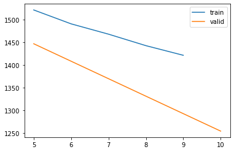
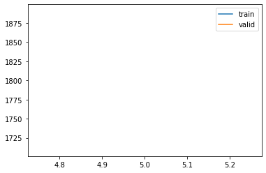
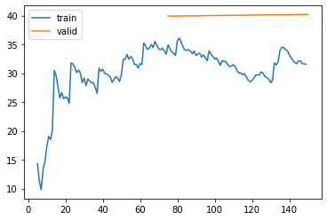
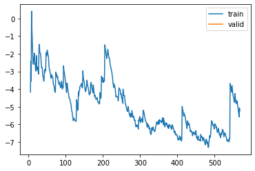

%load_ext autoreload
%autoreload 2Training Kalman Filter for Results - 8 Feb
from meteo_imp.kalman.fastai import *
from meteo_imp.kalman.filter import *
from meteo_imp.utils import *
from meteo_imp.data import *
from meteo_imp.gaussian import *
from fastai.tabular.learner import *
from fastai.learner import *
from fastai.callback.all import *
from fastcore.foundation import L
from fastcore.foundation import patch
from pathlib import Path, PosixPath
from meteo_imp.kalman.fastai import show_results
import pandas as pd
import numpy as np
import torch
import random
from pyprojroot import here
from sklearn.decomposition import PCA
from matplotlib import pyplot as plt
from IPython.display import Image
from tqdm.auto import tqdmreset_seed()haiB = pd.read_parquet(hai_big_path)
hai_eraB = pd.read_parquet(hai_era_big_path)list(haiB.columns)['TA', 'SW_IN', 'VPD', 'PA', 'P', 'WS', 'LW_IN']base = here("analysis/results/trained_8feb")base.mkdir(exist_ok=True)@patch
def add_end(self: PosixPath, end): return self.parent / (self.name + end)def train_or_load(model, dls, lr, n, path, keep=True):
save_models = SaveModelsBatch(times_epoch=5)
csv_logger = CSVLogger(path.add_end("log.csv"), append=True)
learn = Learner(dls, model, KalmanLoss(only_gap=True), cbs = [Float64Callback, save_models, csv_logger], metrics=rmse_gap)
items = random.choices(dls.valid.items, k=4)
if path.add_end(".pickle").exists() and keep:
learn.model = torch.load(path.add_end(".pickle"))
display(csv_logger.read_log())
plot = Image(filename=path.add_end("_loss_plot.png"))
display(plot)
else:
learn.fit(lr, n)
torch.save(learn.model, path.add_end(".pickle"))
learn.recorder.plot_loss()
plt.savefig(path.add_end("_loss_plot.png"))
return learn, items All variables - 30 varying
Model Av (All varying) all variables with a varing numbers of variables
dls_Av = imp_dataloader(haiB, hai_eraB, var_sel = gen_var_sel(list(haiB.columns)), block_len=120, gap_len=30, bs=20, control_lags=[1], n_rep=10).cpu()model_Av = KalmanFilterSR.init_local_slope_pca(len(haiB.columns),len(haiB.columns), df_pca = haiB, pred_only_gap=True, use_conditional=False)learn_Av, items_Av = train_or_load(model_Av, dls_Av, 2, 1e-3, base / "All_gap_varying_30_v1")| epoch | train_loss | valid_loss | rmse_gap | time | |
|---|---|---|---|---|---|
| 0 | 0 | 26.214190 | 30.346192 | 0.386696 | 36:35 |
| 1 | 1 | 17.806891 | 21.144149 | 0.366064 | 38:40 |

def metric_valid(learn):
nrmse = []
for input, target in tqdm(learn.dls.valid):
nrmse.append(learn.metrics[0](learn.model(input), target))
return torch.tensor(nrmse).mean()metric_valid(learn_Av)model_Av.copy??learn_Av, items_Av = train_or_load(model_Av, dls_Av, 1, 5e-4, base / "All_gap_varying_30_v2")show_results(learn_Av, items=items_Av, control_map=control_map)1 var gap - varying 672
dls_A1v = imp_dataloader(haiB[:30_000], hai_eraB, var_sel = gen_var_sel(list(haiB.columns), n_var=1), block_len=800, gap_len=672, bs=5, control_lags=[1], shifts=gen_shifts(300), n_rep=1).cpu()model_A1v = KalmanFilterSR.init_local_slope_pca(len(haiB.columns),len(haiB.columns), df_pca = haiB, pred_only_gap=True, use_conditional=False)learn_A1v, items_A1v = train_or_load(model_A1v, dls_A1v, 2, 1e-3, base / "1_gap_varying_672_v1")| epoch | train_loss | valid_loss | rmse_gap | time |
|---|---|---|---|---|
| 0 | 1566.155526 | 1446.904870 | 0.980710 | 01:21 |
| 1 | 1421.453610 | 1254.100269 | 0.943964 | 01:20 |

1 var gap - varying 672
dls_A1v_nc = imp_dataloader(haiB[:30_000], hai_eraB, var_sel = gen_var_sel(list(haiB.columns), n_var=1), block_len=800, gap_len=672, bs=5, control_lags=[1], shifts=gen_shifts(300), n_rep=1).cpu()model_A1v_nc = KalmanFilterSR.init_local_slope_pca(len(haiB.columns),len(haiB.columns), df_pca = haiB, pred_only_gap=True, use_control=False)learn_A1v_nc, items_A1v_nc = train_or_load(model_A1v_nc, dls_A1v_nc, 1, 1e-3, base / "1_gap_varying_672_no_control_v1")| epoch | train_loss | valid_loss | rmse_gap | time |
|---|---|---|---|---|
| 0 | 2452.263967 | 1800.175459 | 1.147391 | 01:21 |

All variables - 30 all
dls_Aa = imp_dataloader(haiB, hai_eraB, var_sel = list(haiB.columns), block_len=120, gap_len=30, bs=20, control_lags=[1], n_rep=1).cpu()model_Aa = model_Av.copy()learn_Aa, items_Aa = train_or_load(model_Aa, dls_Aa, 2, 3e-4, base / "All_gap_all_30_v1", keep=False)| epoch | train_loss | valid_loss | rmse_gap | time |
|---|---|---|---|---|
| 0 | 33.282077 | 39.916592 | 0.410030 | 02:31 |
| 1 | 31.570166 | 40.208255 | 0.410228 | 02:20 |

show_results(learn_Aa, items=items_Aa, control_map=control_map)[MeteoImpItem(i=1647, shift=-60, var_sel=['TA', 'SW_IN', 'VPD', 'PA', 'P', 'WS', 'LW_IN'], gap_len=30), MeteoImpItem(i=1765, shift=-60, var_sel=['TA', 'SW_IN', 'VPD', 'PA', 'P', 'WS', 'LW_IN'], gap_len=30), MeteoImpItem(i=1785, shift=-60, var_sel=['TA', 'SW_IN', 'VPD', 'PA', 'P', 'WS', 'LW_IN'], gap_len=30), MeteoImpItem(i=1717, shift=-60, var_sel=['TA', 'SW_IN', 'VPD', 'PA', 'P', 'WS', 'LW_IN'], gap_len=30)]All variables - 12 varying
Model Av (All varying) all variables with a varing numbers of variables
dls_Av12 = imp_dataloader(haiB, hai_eraB, var_sel = gen_var_sel(list(haiB.columns)), block_len=80, gap_len=12, bs=20, control_lags=[1], n_rep=5).cpu()model_Av12 = model_Av.copy()learn_Av12, items_Av12 = train_or_load(model_Av12, dls_Av12, 1, 1e-4, base / "All_gap_varying_12_v1")| epoch | train_loss | valid_loss | rmse_gap | time |
|---|---|---|---|---|
| 0 | -5.242486 | -5.854822 | 0.276692 | 13:14 |

show_results(learn_Av12, items=items_Av12, control_map=control_map)[MeteoImpItem(i=2681, shift=-8, var_sel=['WS', 'VPD', 'SW_IN', 'P', 'TA', 'LW_IN'], gap_len=12), MeteoImpItem(i=2429, shift=-8, var_sel=['WS', 'PA', 'TA', 'LW_IN', 'VPD', 'P'], gap_len=12), MeteoImpItem(i=2846, shift=-8, var_sel=['WS', 'P', 'VPD'], gap_len=12), MeteoImpItem(i=2377, shift=-40, var_sel=['LW_IN', 'PA'], gap_len=12)]TA - 30
dls_TA = imp_dataloader(haiB, hai_eraB, var_sel = 'TA', block_len=120, gap_len=30, bs=20, control_lags=[1], n_rep=5).cpu()model_TA = model_Av.copy()learn_TA, save_models_TA, items_TA = train_or_load(model_TA, dls_TA, 2, 2e-4, base / "TA_30_v1.pickle")FileNotFoundError: [Errno 2] No such file or directory: '/home/simone/Documents/uni/Thesis/GPFA_imputation/analysis/results/trained_8feb/TA_30_v1.picklelog.csv'learn_TA, items_TA, loggerTA = train_or_load(model_TA, dls_TA, 1, 2e-4, base / "TA_30_v2.pickle")loggerTA.read_log()| epoch | train_loss | valid_loss | rmse_gap | time | |
|---|---|---|---|---|---|
| 0 | 0 | -22.20629 | -22.448926 | 0.097302 | 11:15 |
show_results(learn_TA, items=items_TA, control_map=control_map, hide_no_gap=True)TA - 96
Model TA
dls_TA96 = imp_dataloader(haiB, hai_eraB, var_sel = 'TA', block_len=350, gap_len=96, bs=20, control_lags=[1], n_rep=1).cpu()model_TA96 = learn_Av.model.copy()learn_TA96, save_models_TA96, items_TA96 = train_or_load(model_TA96, dls_TA96, 2, 2e-4, base / "TA_96_v1.pickle")show_results(learn_TA96, items=items_TA96, control_map=control_map, hide_no_gap=True)Train specialized models
spec_models = {}
spec_dls = {}
spec_learn = {}
spec_items = {}
for var in list(haiB.columns):
print(var)
spec_dls[var] = imp_dataloader(haiB[:40000], hai_eraB, var_sel = var, block_len=350, gap_len=96, bs=20, control_lags=[1], n_rep=1).cpu()
spec_models[var] = learn_Av.model.copy()
spec_learn[var], spec_items[var] = train_or_load(spec_models[var], spec_dls[var], 2, 2e-4, base / f"{var}_specialized_v1.pickle")
| epoch | train_loss | valid_loss | rmse_gap | time |
|---|---|---|---|---|
| 0 | -39.692397 | -42.531067 | 0.131699 | 00:42 |
| 1 | -45.283476 | -33.323406 | 0.144391 | 00:37 |
| epoch | train_loss | valid_loss | rmse_gap | time |
|---|---|---|---|---|
| 0 | 49.694907 | 6.908584 | 0.222646 | 00:38 |
| 1 | 45.584341 | 10.284428 | 0.239156 | 00:39 |
| epoch | train_loss | valid_loss | rmse_gap | time |
|---|---|---|---|---|
| 0 | 27.420796 | -6.238979 | 0.190993 | 00:40 |
| 1 | 24.375462 | -4.962333 | 0.200030 | 00:38 |
| epoch | train_loss | valid_loss | rmse_gap | time |
|---|---|---|---|---|
| 0 | -111.954325 | -106.969053 | 0.075821 | 00:42 |
| 1 | -118.061853 | -119.208259 | 0.065790 | 00:40 |
| epoch | train_loss | valid_loss | rmse_gap | time |
|---|---|---|---|---|
| 0 | 122.597622 | 113.888477 | 0.592852 | 00:41 |
| 1 | 124.965769 | 113.211150 | 0.584031 | 00:40 |
| epoch | train_loss | valid_loss | rmse_gap | time |
|---|---|---|---|---|
| 0 | 85.440672 | 82.872583 | 0.552278 | 00:39 |
| 1 | 85.644038 | 82.978043 | 0.553163 | 00:38 |
| epoch | train_loss | valid_loss | rmse_gap | time |
|---|---|---|---|---|
| 0 | 31.828594 | 27.359172 | 0.290250 | 00:43 |
| 1 | 29.653514 | 26.873250 | 0.288271 | 00:38 |

spec_models = {}
spec_dls = {}
spec_learn = {}
spec_items = {}
for var in tqdm(list(haiB.columns)):
print(var)
spec_dls[var] = imp_dataloader(haiB[:30000], hai_eraB, var_sel = var, block_len=500, gap_len=192, bs=20, control_lags=[1], n_rep=1).cpu()
spec_models[var] = learn_Av.model.copy()
spec_learn[var], spec_items[var] = train_or_load(spec_models[var], spec_dls[var], 1, 1e-4, base / f"{var}_specialized_gap_192_v1.pickle")
plt.show()
TA| epoch | train_loss | valid_loss | rmse_gap | time |
|---|---|---|---|---|
| 0 | 90.643715 | -16.383068 | 0.177646 | 00:36 |

SW_IN| epoch | train_loss | valid_loss | rmse_gap | time |
|---|---|---|---|---|
| 0 | 62.269008 | 103.003446 | 0.385411 | 00:40 |

VPD| epoch | train_loss | valid_loss | rmse_gap | time |
|---|---|---|---|---|
| 0 | 95.957126 | 285.851886 | 0.495180 | 00:41 |

PA| epoch | train_loss | valid_loss | rmse_gap | time |
|---|---|---|---|---|
| 0 | -51.859173 | -69.926766 | 0.125275 | 00:43 |

P| epoch | train_loss | valid_loss | rmse_gap | time |
|---|---|---|---|---|
| 0 | 289.581748 | 212.260866 | 0.520403 | 00:40 |

WS| epoch | train_loss | valid_loss | rmse_gap | time |
|---|---|---|---|---|
| 0 | 208.126112 | 177.603145 | 0.593094 | 00:39 |

LW_IN| epoch | train_loss | valid_loss | rmse_gap | time |
|---|---|---|---|---|
| 0 | 63.759073 | 62.438796 | 0.308980 | 00:41 |

spec_models = {}
spec_dls = {}
spec_learn = {}
spec_items = {}
for var in tqdm(list(haiB.columns)):
print(var) # 1 week
spec_dls[var] = imp_dataloader(haiB[:30000], hai_eraB, var_sel = var, block_len=500, gap_len=336, bs=20, control_lags=[1], n_rep=1).cpu()
spec_models[var] = learn_Av.model.copy()
spec_learn[var], spec_items[var] = train_or_load(spec_models[var], spec_dls[var], 1, 1e-4, base / f"{var}_specialized_gap_336_v1.pickle")
plt.show()
TA| epoch | train_loss | valid_loss | rmse_gap | time |
|---|---|---|---|---|
| 0 | 244.441678 | -39.264206 | 0.179186 | 00:42 |

SW_IN| epoch | train_loss | valid_loss | rmse_gap | time |
|---|---|---|---|---|
| 0 | 92.375716 | 216.062288 | 0.416458 | 00:43 |

VPD| epoch | train_loss | valid_loss | rmse_gap | time |
|---|---|---|---|---|
| 0 | 182.519898 | 378.167553 | 0.452476 | 00:45 |

PA| epoch | train_loss | valid_loss | rmse_gap | time |
|---|---|---|---|---|
| 0 | 22.902731 | -134.399585 | 0.125682 | 00:45 |

P| epoch | train_loss | valid_loss | rmse_gap | time |
|---|---|---|---|---|
| 0 | 449.964537 | 412.074092 | 0.671240 | 00:44 |

WS| epoch | train_loss | valid_loss | rmse_gap | time |
|---|---|---|---|---|
| 0 | 373.671535 | 304.890972 | 0.592034 | 00:45 |

LW_IN| epoch | train_loss | valid_loss | rmse_gap | time |
|---|---|---|---|---|
| 0 | 108.351227 | 109.968726 | 0.309430 | 00:44 |

spec_models = {}
spec_dls = {}
spec_learn = {}
spec_items = {}
for var in tqdm(list(haiB.columns)):
print(var) # 2 weeks
spec_dls[var] = imp_dataloader(haiB[:30000], hai_eraB, var_sel = var, block_len=1000, gap_len=672, bs=20, control_lags=[1], n_rep=1).cpu()
spec_models[var] = learn_Av.model.copy()
spec_learn[var], spec_items[var] = train_or_load(spec_models[var], spec_dls[var], 1, 1e-4, base / f"{var}_specialized_gap_672_v1.pickle")
plt.show()
TA| epoch | train_loss | valid_loss | rmse_gap | time |
|---|---|---|---|---|
| 0 | 657.307163 | 118.648190 | 0.204232 | 01:09 |

SW_IN| epoch | train_loss | valid_loss | rmse_gap | time |
|---|---|---|---|---|
| 0 | 262.173894 | 525.063575 | 0.456621 | 01:11 |

VPD| epoch | train_loss | valid_loss | rmse_gap | time |
|---|---|---|---|---|
| 0 | 493.652948 | 311.636245 | 0.362475 | 01:12 |

PA| epoch | train_loss | valid_loss | rmse_gap | time |
|---|---|---|---|---|
| 0 | 82.584014 | -149.931723 | 0.136190 | 01:14 |

P| epoch | train_loss | valid_loss | rmse_gap | time |
|---|---|---|---|---|
| 0 | 970.131864 | 821.798107 | 0.729170 | 01:18 |

WS| epoch | train_loss | valid_loss | rmse_gap | time |
|---|---|---|---|---|
| 0 | 806.418451 | 579.607119 | 0.573610 | 01:16 |

LW_IN| epoch | train_loss | valid_loss | rmse_gap | time |
|---|---|---|---|---|
| 0 | 228.687149 | 231.744756 | 0.317265 | 01:15 |

def train_specialized(gap_len=30, block_len=120, bs=20, df=haiB, control=hai_eraB):
SW_IN - 30
dls_SW_IN = imp_dataloader(haiB, hai_eraB, var_sel = 'SW_IN', block_len=120, gap_len=30, bs=20, control_lags=[1], n_rep=5).cpu()model_SW_IN = model_Av.copy()learn_SW_IN, items_SW_IN = train_or_load(model_SW_IN, dls_SW_IN, 2, 2e-4, base / "SW_IN_30_v1")| epoch | train_loss | valid_loss | rmse_gap | time |
|---|---|---|---|---|
| 0 | 8.902548 | 7.420177 | 0.267329 | 14:57 |
| 1 | 5.782914 | 5.721588 | 0.249692 | 10:34 |

show_results(learn_SW_IN, items=items_SW_IN, control_map=control_map, hide_no_gap=True)[MeteoImpItem(i=1588, shift=-60, var_sel=['SW_IN'], gap_len=30), MeteoImpItem(i=1863, shift=12, var_sel=['SW_IN'], gap_len=30), MeteoImpItem(i=1704, shift=36, var_sel=['SW_IN'], gap_len=30), MeteoImpItem(i=1545, shift=12, var_sel=['SW_IN'], gap_len=30)]SW_IN - 96
Model SW_IN (All varying) all variables with a varing numbers of variables
dls_SW_IN96 = imp_dataloader(haiB, hai_eraB, var_sel = 'SW_IN', block_len=350, gap_len=96, bs=20, control_lags=[1], n_rep=5).cpu()model_SW_IN96 = model_SW_IN.copy()learn_SW_IN96, save_models_SW_IN96, items_SW_IN96 = train_or_load(model_SW_IN96, dls_SW_IN96, 2, 2e-4, base / "SW_IN_96_v1.pickle")show_results(learn_SW_IN96, items=items_SW_IN96, control_map=control_map, hide_no_gap=True)LW_IN - 12
dls_LW_IN = imp_dataloader(haiB, hai_eraB, var_sel = 'LW_IN', block_len=100, gap_len=12, bs=20, control_lags=[1], n_rep=5).cpu()model_LW_IN = model_Av.copy()learn_LW_IN, save_models_LW_IN, items_LW_IN = train_or_load(model_LW_IN, dls_LW_IN, 2, 2e-4, base / "LW_IN_12_v1.pickle")show_results(learn_LW_IN, items=items_LW_IN, control_map=control_map, hide_no_gap=True)LW_IN - 96
Model LW_IN (All varying) all variables with a varing numbers of variables
dls_LW_IN96 = imp_dataloader(haiB, hai_eraB, var_sel = 'LW_IN', block_len=350, gap_len=96, bs=20, control_lags=[1], n_rep=5).cpu()model_LW_IN96 = model_LW_IN.copy()learn_LW_IN96, save_models_LW_IN96, items_LW_IN96 = train_or_load(model_LW_IN96, dls_LW_IN96, 2, 2e-4, base / "LW_IN_96_v1.pickle")show_results(learn_LW_IN96, items=items_LW_IN96, control_map=control_map, hide_no_gap=True)No Control
All variables - 30 varying - No Control
Model Av_nc (All varying) all variables with a varing numbers of variables
dls_Av_nc = imp_dataloader(haiB,
control = hai_eraB.sample(frac=1).reset_index(drop=True).set_index(hai_eraB.index), #reshuffle so cannot use control
var_sel = gen_var_sel(list(haiB.columns)), block_len=120, gap_len=30, bs=20, control_lags=[1], n_rep=10).cpu()model_Av_nc = KalmanFilterSR.init_local_slope_pca(len(haiB.columns),len(haiB.columns), df_pca = haiB, pred_only_gap=True, use_conditional=False, use_control=False)learn_Av_nc, items_Av_nc = train_or_load(model_Av_nc, dls_Av_nc, 2, 1e-3, base / "All_gap_varying_30_no_control_v1")
50.00% [1/2 38:45<38:45]
| epoch | train_loss | valid_loss | rmse_gap | time |
|---|---|---|---|---|
| 0 | 48.175866 | 46.578383 | 0.431465 | 38:45 |
1.19% [9/758 00:35<49:33 51.5082]
KeyboardInterrupt: show_results(learn_Av_nc, items=items_Av_nc, control_map=control_map)